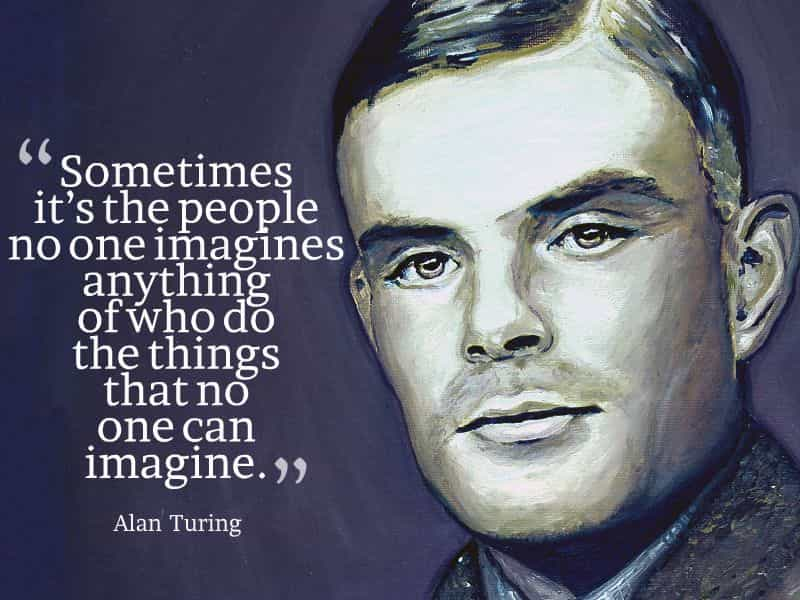
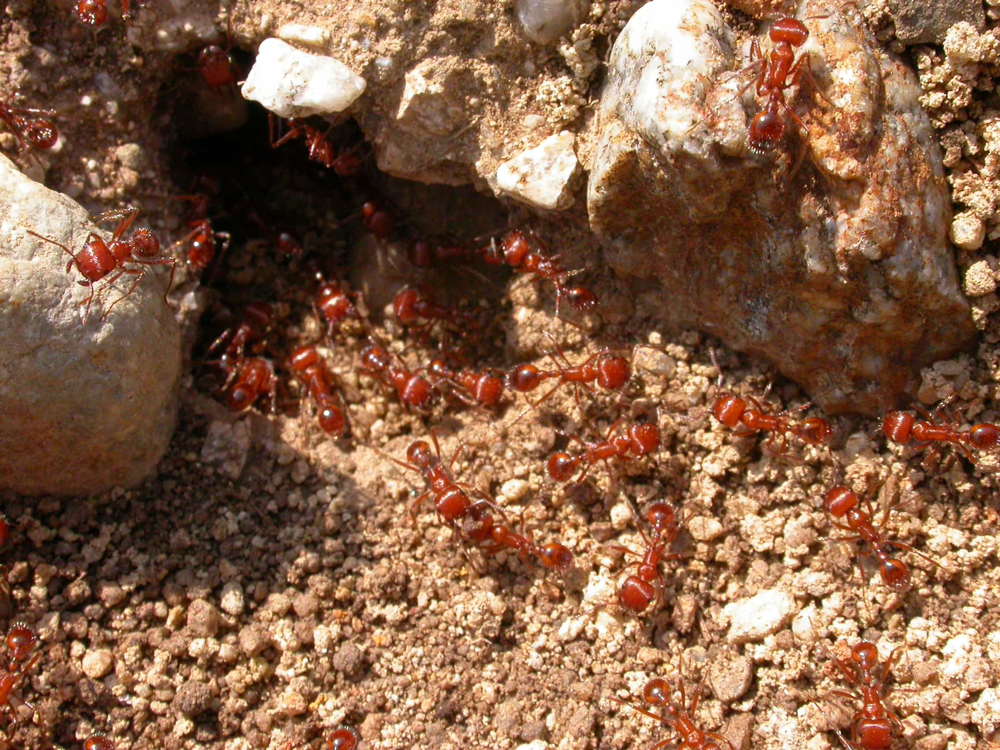
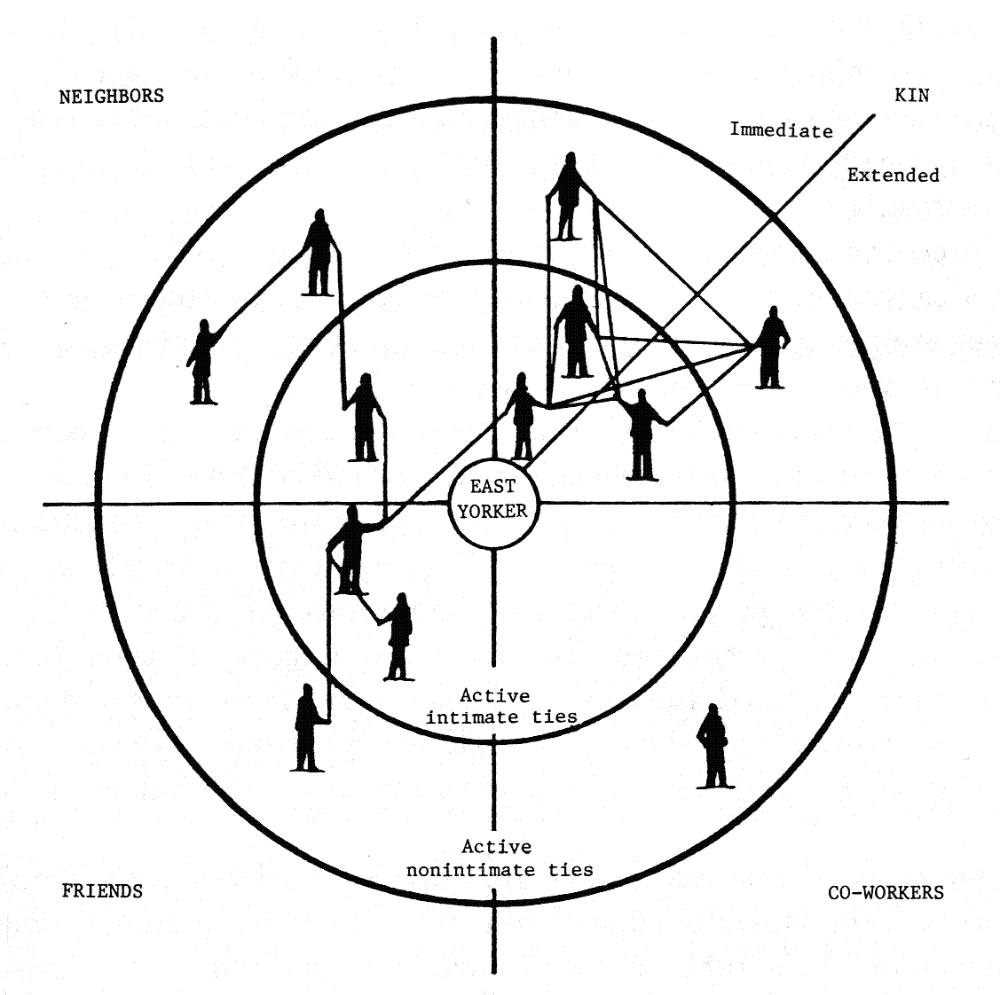

< < < Back
How Complex Systems Science Affects The Manosphere – Return Of Kings
Ever since I read Niall Ferguson’s book Civilization (2011), I have wanted to get a closer look at Melanie Mitchell’s book Complexity: A Guided Tour (2011), which the Scottish Harvard University historian refers to in an engaging discussion about how civilizations, like the West, are constituted.
Ferguson and other historians analyze civilizations at a level where many people can connect the dots, about for instance demographic and economic data, but the deeper connections require a closer investigation. If one urges to grasp how the underlying patterns are formed and why they ”behave” in such and such ways, one has to look into various complex systems of our world. Such as cell DNA and data computation among other sub-fields within emerging multidisciplinary science.
Mitchell’s book provides relevant information in that respect and can help the reader to increase his ability to make social and cultural analysis. It can also help us understand new and sometimes alarming trends in our current digital world.
Complex systems science as a cumulative process
Discoveries within various fields of science can be described as a cumulative process. Some make discoveries and then some other modify and clarify these a bit later. Even though individual genius is important for scientific progress, genuises working over time and space are seemingly even more significant.
We don’t have to reiterate that most prominent scientists are males, and in this book names such as John von Neumann (principles of self-reproduction), John Holland (balancing exploitation and exploration), Robert Axelrod (evolutionary cooperation), Stephen Wolfram (computional equivalence), and Albert-László Barabási and Réka Albert (preferential attachment related to social networks theory) pass by throughout Mitchell’s guided tour.
Their ideas hinge upon those of for instance Ludwig Boltzmann, Charles Darwin, Alan Turing and James Watson. But what can we more specifically actually learn from them?

Which complex systems are relevant?
Much of this book is basically history of science. If you know the basics of physics, mathematics, genetics and computer science then at least 1/3 is known stuff. In this regard this book is as good as any, although particularly well-written. But there are some dimensions that could actually benefit writers and readers (or theorists and practitioners for that matter) of the manosphere.
The strength of the manosphere is the empirical angle: people collect data from real life experiences and observations rather than speculative abstract theories, and are not afraid of realtalk on contentious topics. But the scientific reliability of this or that argument is sometimes questionable, to say the least. It is not like everything has to be scientific anyway, but some of the more sophisticated analyses have to be that in order to actually say something substantial about the world.
Additionally, the dissident angle represents a potential threat to the American globalist establishment, and new algorithms and other measures can negatively affect even those well-articulated voices who just wish to express their opinions online.
Here are some areas – largely inter-related – that can be improved or at least understood by the means of complex systems science:
1. Computional science
2. Network theory
3. Information processing
Before I carry on and explain which specific areas that an improved knowledge can be useful within, I will quote a passage from the book that gives a hint about some of the underlying principles discussed in Complexity (pp. 180-81).
One consequence of encoding information as statistical and time-varying patterns of low level components is that no individual component of the system can perceive or communicate the ”bic picture” of the state of the system. Instead, information must be communicated via spatial and temporary sampling.
In the immune system, for example, lymphocytes sample their environment via receptors for both antigens and signals from other immune systems cells in the form of cytokines. It is the results of the lymphocytes’ samples of the spatial and temporal concentration of these molecular signals that cause lymphocytes to become active or stay dormant. Other cells are in turn affected by the samples they take of the concentration and type of active lymphocytes, which can lead pathogen-killer cells to particular areas in the body. In ant colonies, an individual ant samples pheromone signals via the receptors.
It bases its decisions on which way to move on the results of these sampled patterns of concentration of pheromones in the environment. As I described above, individual ants also use sampling of concentration-based information – via random encounters with other ants – to decide when to adopt a particular task. In cellular metabolism, feedback in metabolic pathways arises from bindings between enzymes and particular molecules as enzymes sample spatial and time-varying concentrations of molecules.

Computational science, network theory and information processing
Much like complex systems theories in general, network theory is interdisciplinary and can be applied to many fields, such as economics and medicine (metabolical networks and mapping of sexually transmitted diseases). For instance, some network scientists came up with this simple yet pragmatic solution regarding STD:
…choose a set of random people from the at-risk population and ask each to name a partner. Then vaccinate that partner. People with many partners will be more likely to be named, and thus vaccinated, under this scheme.
Scale-free networks, such as the Internet, are dependent on the interplay between internal hyperlinks and external hyperlinks, often via Google and various social media websites that can create more traffic through posting, sharing and search optimization.
Using network terminology, Return of Kings is the hub within the manosphere, with other discussion boards, articles, books, websites, blogs and social media channels as interconnected dots. If some dots disappear, like peripheral individuals, blogs and comments, it is not particularly important for the entire network, but if hubs do then it will affect the network in its totality.
The problem is not necessarily the lack of competence of readers and writers, but the Google hegemony on the Internet. If for example Google, YouTube, Facebook and WordPress came up with a solution, based on algorithms and computer simulation, to block dissent and trolling it could (arbitrarily) imply a severe curtailment of free speech online. In that case are there any hopes for substantial parallel alternatives to Google and the largest social media platforms? Things that people in general can use without being a computer expert?
Apart from that, interplay between online and offline networks could certainly be approved by means of talking to at least 10 prospects within your own network, spreading ideas in a chain-like system. Or to use the vaccination example in another way: try to “vaccinate” one influential person in your network (with many partners, whatever that means) from the ideas of the Matrix.
These strategies are also used, more or less, by other spheres so perhaps it is the content rather than the strategies that makes the difference. But that requires that the content is available.

Read More: Game Does Not Need Science